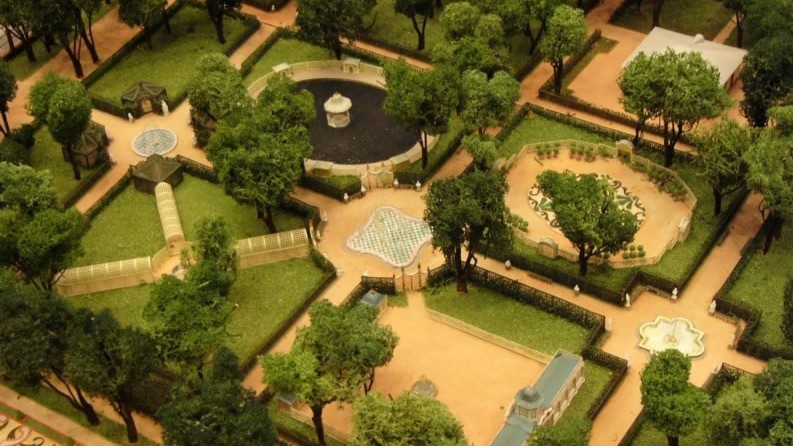
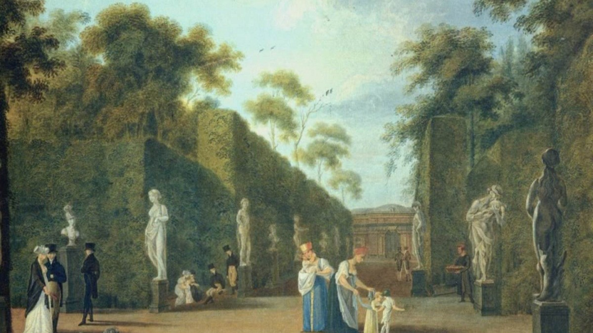
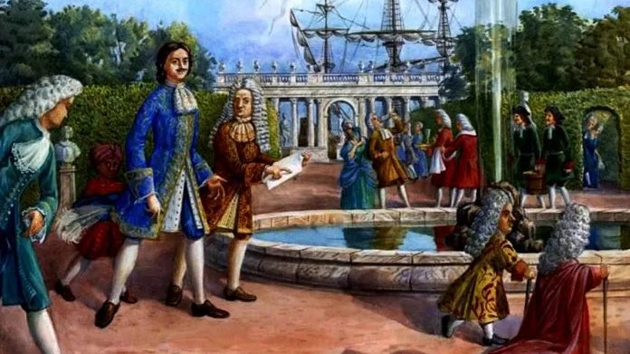
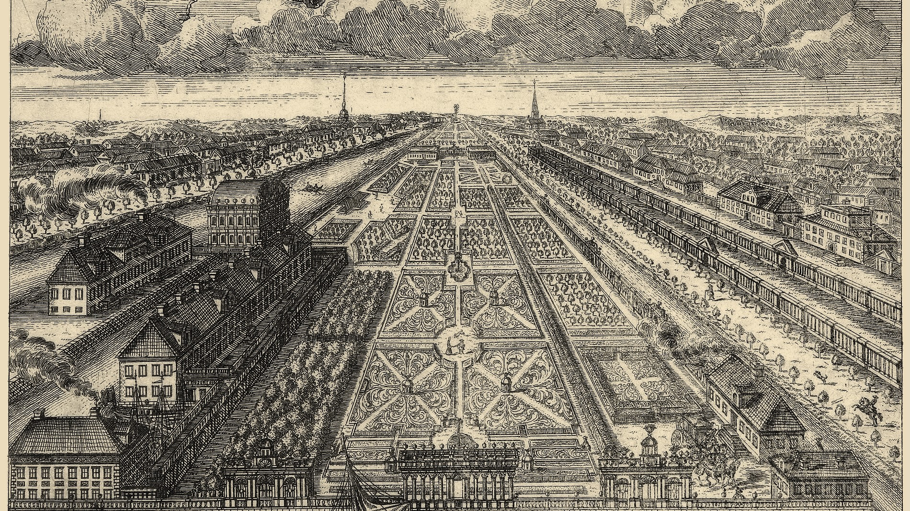

1. Шведская мыза (до 1703)
До основания Петербурга на этом месте располагалась обжитая усадьба (мыза) шведского майора Эриха Берндта фон Конау. Здесь был небольшой дом, хозяйственный двор и скромный голландский садик у берега.
2. Выбор Императора (1704)
Пётр I решает создать здесь свою резиденцию. Место выбрано не случайно: территория уже обжита, а близость рек позволяет легко подвозить материалы и строить водометы. Старые постройки идут под снос.
3. Первые фонтаны (1705 - 1712)
Начинается масштабная перестройка. Прокладывают прямые аллеи. Безымянный ерик углубляют для питания первых в России фонтанов — так река получает название Фонтанка.
4. Итальянский шик (1710-е)
В сад привозят десятки изысканных мраморных статуй из Венеции и Рима. Деревья строго подстригают в форме геометрических фигур (боскеты), следуя европейской моде на регулярные парки.
5. Императорский сад (1720-е)
Построен Летний дворец. Частная усадьба превратилась в парадный центр молодой империи. Здесь проходят знаменитые петровские ассамблеи, балы и приемы иностранных послов.